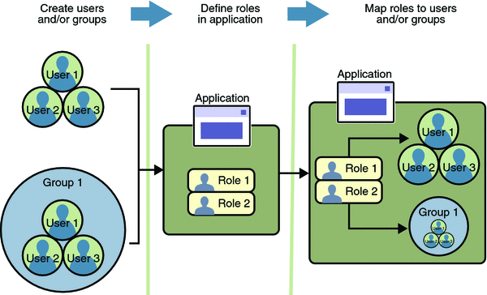

Working with Realms, Users, Groups, and Roles
You often need to protect resources to ensure that only authorized users have access. Authorization provides controlled access to protected resources. Authorization is based on identification and authentication. Identification is a process that enables recognition of an entity by a system, and authentication is a process that verifies the identity of a user, device, or other entity in a computer system, usually as a prerequisite to allowing access to resources in a system. These concepts are discussed in more detail in Characteristics of Application Security.
This section discusses setting up users so that they can be correctly identified and either given access to protected resources, or denied access if the user is not authorized to access the protected resources. To authenticate a user, you need to follow these basic steps:
The Application Developer writes code to prompt the user for their user name and password. The different methods of authentication are discussed in Specifying an Authentication Mechanism.
The Application Developer communicates how to set up security for the deployed application by use of a deployment descriptor. This step is discussed in Setting Up Security Roles.
The Server Administrator sets up authorized users and groups on the Application Server. This is discussed in Managing Users and Groups on the Application Server.
The Application Deployer maps the application’s security roles to users, groups, and principals defined on the Application Server. This topic is discussed in Mapping Roles to Users and Groups.
What Are Realms, Users, Groups, and Roles?
A realm is defined on a web or application server. It contains a collection of users, which may or may not be assigned to a group, that are controlled by the same authentication policy. Managing users on the Application Server is discussed in Managing Users and Groups on the Application Server.
An application will often prompt a user for their user name and password before allowing access to a protected resource. After the user has entered their user name and password, that information is passed to the server, which either authenticates the user and sends the protected resource, or does not authenticate the user, in which case access to the protected resource is denied. This type of user authentication is discussed in Specifying an Authentication Mechanism.
In some applications, authorized users are assigned to roles. In this situation, the role assigned to the user in the application must be mapped to a group defined on the application server. Figure 28-6 shows this. More information on mapping roles to users and groups can be found in Setting Up Security Roles.
Figure 28-6 Mapping Roles to Users and Groups
The following sections provide more information on realms, users, groups, and roles.
What Is a Realm?
For a web application, a realm is a complete database of users and groups that identify valid users of a web application (or a set of web applications) and are controlled by the same authentication policy.
The Java EE server authentication service can govern users in multiple realms. In this release of the Application Server, the file, admin-realm, and certificate realms come preconfigured for the Application Server.
In the file realm, the server stores user credentials locally in a file named keyfile. You can use the Admin Console to manage users in the file realm.
When using the file realm, the server authentication service verifies user identity by checking the file realm. This realm is used for the authentication of all clients except for web browser clients that use the HTTPS protocol and certificates.
In the certificate realm, the server stores user credentials in a certificate database. When using the certificate realm, the server uses certificates with the HTTPS protocol to authenticate web clients. To verify the identity of a user in the certificate realm, the authentication service verifies an X.509 certificate. For step-by-step instructions for creating this type of certificate, see Working with Digital Certificates. The common name field of the X.509 certificate is used as the principal name.
The admin-realm is also a FileRealm and stores administrator user credentials locally in a file named admin-keyfile. You can use the Admin Console to manage users in this realm in the same way you manage users in the file realm. For more information, see Managing Users and Groups on the Application Server.
What Is a User?
A user is an individual (or application program) identity that has been defined in the Application Server. In a web application, a user can have a set of roles associated with that identity, which entitles them to access all resources protected by those roles. Users can be associated with a group.
A Java EE user is similar to an operating system user. Typically, both types of users represent people. However, these two types of users are not the same. The Java EE server authentication service has no knowledge of the user name and password you provide when you log on to the operating system. The Java EE server authentication service is not connected to the security mechanism of the operating system. The two security services manage users that belong to different realms.
What Is a Group?
A group is a set of authenticated users, classified by common traits, defined in the Application Server.
A Java EE user of the file realm can belong to an Application Server group. (A user in the certificate realm cannot.) An Application Server group is a category of users classified by common traits, such as job title or customer profile. For example, most customers of an e-commerce application might belong to the CUSTOMER group, but the big spenders would belong to the PREFERRED group. Categorizing users into groups makes it easier to control the access of large numbers of users.
An Application Server group has a different scope from a role. An Application Server group is designated for the entire Application Server, whereas a role is associated only with a specific application in the Application Server.
What Is a Role?
A role is an abstract name for the permission to access a particular set of resources in an application. A role can be compared to a key that can open a lock. Many people might have a copy of the key. The lock doesn’t care who you are, only that you have the right key.
Some Other Terminology
The following terminology is also used to describe the security requirements of the Java EE platform:
Principal: A principal is an entity that can be authenticated by an authentication protocol in a security service that is deployed in an enterprise. A principal is identified using a principal name and authenticated using authentication data.
Security policy domain (also known as security domain or realm): A security policy domain is a scope over which a common security policy is defined and enforced by the security administrator of the security service.
Security attributes: A set of security attributes is associated with every principal. The security attributes have many uses, for example, access to protected resources and auditing of users. Security attributes can be associated with a principal by an authentication protocol.
Credential: A credential contains or references information (security attributes) used to authenticate a principal for Java EE product services. A principal acquires a credential upon authentication, or from another principal that allows its credential to be used.
Managing Users and Groups on the Application Server
Managing users on the Application Server is discussed in more detail in the Sun Java System Application Server 9.1 Administration Guide.
This tutorial provides steps for managing users that will need to be completed to work through the tutorial examples.
Adding Users to the Application Server
To add users to the Application Server, follow these steps:
Start the Application Server if you haven’t already done so. Information on starting the Application Server is available in Starting and Stopping the Application Server.
Start the Admin Console if you haven’t already done so. You can start the Admin Console by starting a web browser and entering the URL http://localhost:4848/asadmin. If you changed the default Admin port during installation, enter the correct port number in place of 4848.
To log in to the Admin Console, enter the user name and password of a user in the admin-realm who belongs to the asadmin group. The name and password entered during installation will work, as will any users added to this realm and group subsequent to installation.
Expand the Configuration node in the Admin Console tree.
Expand the Security node in the Admin Console tree.
Expand the Realms node.
Select the file realm to add users you want to enable to access applications running in this realm. (For the example security applications, select the file realm.)
Select the admin-realm to add users you want to enable as system administrators of the Application Server.
You cannot enter users into the certificate realm using the Admin Console. You can only add certificates to the certificate realm. For information on adding (importing) certificates to the certificate realm, read Adding Users to the Certificate Realm.
Click the Manage Users button.
Click New to add a new user to the realm.
Enter the correct information into the User ID, Password, and Group(s) fields.
If you are adding a user to the file realm, enter the name to identify the user, a password to allow the user access to the realm, and a group to which this user belongs. For more information on these properties, read Working with Realms, Users, Groups, and Roles.
For the example security applications, enter a user with any name and password you like, but make sure that the user is assigned to the group of user.
If you are adding a user to the admin-realm, enter the name to identify the user, a password to allow the user access to the Application Server, and enter asadmin in the Group field.
Click OK to add this user to the list of users in the realm.
Click Logout when you have completed this task.
Adding Users to the Certificate Realm
In the certificate realm, user identity is set up in the Application Server security context and populated with user data obtained from cryptographically-verified client certificates. For step-by-step instructions for creating this type of certificate, see Working with Digital Certificates.
Setting Up Security Roles
When you design an enterprise bean or web component, you should always think about the kinds of users who will access the component. For example, a web application for a human resources department might have a different request URL for someone who has been assigned the role of DEPT_ADMIN than for someone who has been assigned the role of DIRECTOR. The DEPT_ADMIN role may let you view employee data, but the DIRECTOR role enables you to modify employee data, including salary data. Each of these security roles is an abstract logical grouping of users that is defined by the person who assembles the application. When an application is deployed, the deployer will map the roles to security identities in the operational environment, as shown in Figure 28-6.
For applications, you define security roles in the Java EE deployment descriptor file application.xml, and the corresponding role mappings in the Application Server deployment descriptor file sun-application.xml. For individually deployed web or EJB modules, you define roles in the Java EE deployment descriptor files web.xml or ejb-jar.xml and the corresponding role mappings in the Application Server deployment descriptor files sun-web.xml or sun-ejb-jar.xml.
The following is an example of a security constraint from a web.xml application deployment descriptor file where the role of DEPT-ADMIN is authorized for methods that review employee data and the role of DIRECTOR is authorized for methods that change employee data.
<security-constraint> <web-resource-collection> <web-resource-name>view dept data</web-resource-name> <url-pattern>/hr/employee/*</url-pattern> <http-method>GET</http-method> <http-method>POST</http-method> </web-resource-collection> <auth-constraint> <role-name>DEPT_ADMIN</role-name> </auth-constraint> <user-data-constraint> <transport-guarantee>CONFIDENTIAL</transport-guarantee> </user-data-constraint> </security-constraint> <security-constraint> <web-resource-collection> <web-resource-name>change dept data</web-resource-name> <url-pattern>/hr/employee/*</url-pattern> <http-method>GET</http-method> <http-method>PUT</http-method> </web-resource-collection> <auth-constraint> <role-name>DIRECTOR</role-name> </auth-constraint> <user-data-constraint> <transport-guarantee>CONFIDENTIAL</transport-guarantee> </user-data-constraint> </security-constraint>
The web.xml application deployment descriptor is described in more detail in Declaring Security Requirements in a Deployment Descriptor.
After users have provided their login information, and the application has declared what roles are authorized to access protected parts of an application, the next step is to map the security role to the name of a user, or principal. This step is discussed in the following section.
Mapping Roles to Users and Groups
When you are developing a Java EE application, you don’t need to know what categories of users have been defined for the realm in which the application will be run. In the Java EE platform, the security architecture provides a mechanism for mapping the roles defined in the application to the users or groups defined in the runtime realm. To map a role name permitted by the application or module to principals (users) and groups defined on the server, use the security-role-mapping element in the runtime deployment descriptor (sun-application.xml, sun-web.xml, or sun-ejb-jar.xml) file. The entry needs to declare a mapping between a security role used in the application and one or more groups or principals defined for the applicable realm of the Application Server. An example for the sun-web.xml file is shown below:
<sun-web-app>
<security-role-mapping>
<role-name>DIRECTOR</role-name>
<principal-name>mcneely</principal-name>
</security-role-mapping>
<security-role-mapping>
<role-name>MANAGER</role-name>
<group-name>manager</group-name>
</security-role-mapping>
</sun-web-app>The role name can be mapped to either a specific principal (user), a group, or both. The principal or group names referenced must be valid principals or groups in the current default realm of the Application Server. The role-name in this example must exactly match the role-name in the security-role element of the corresponding web.xml file or the role name defined in the @DeclareRoles or @RolesAllowed annotations.
Sometimes the role names used in the application are the same as the group names defined on the Application Server. Under these circumstances, you can enable a default principal-to-role mapping on the Application Server using the Admin Console. From the Admin Console, select Configuration, then Security, then check the enable box beside Default Principal to Role Mapping. If you need more information about using the Admin Console, see Adding Users to the Application Server.